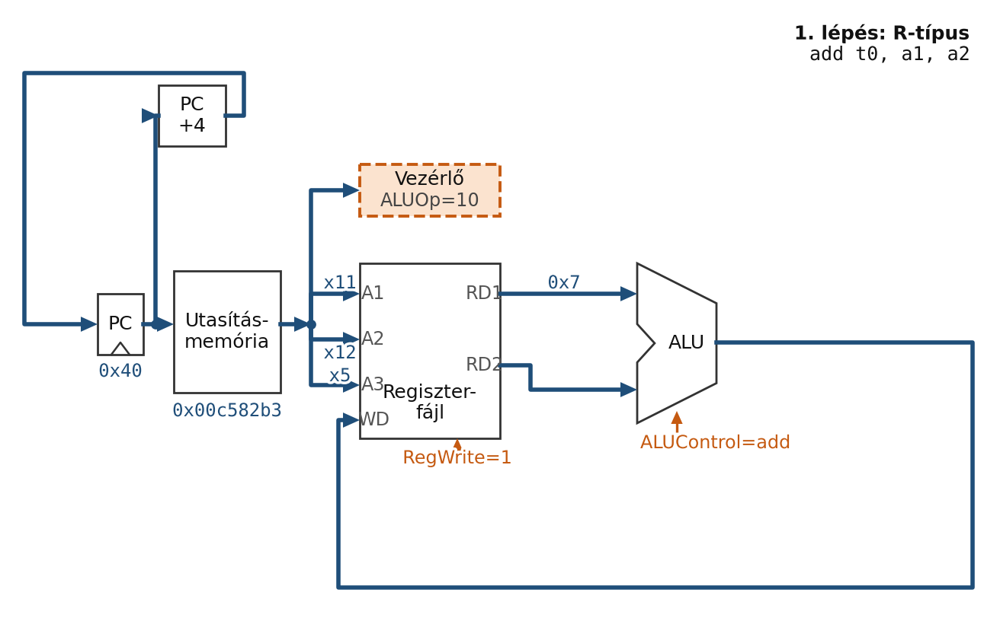
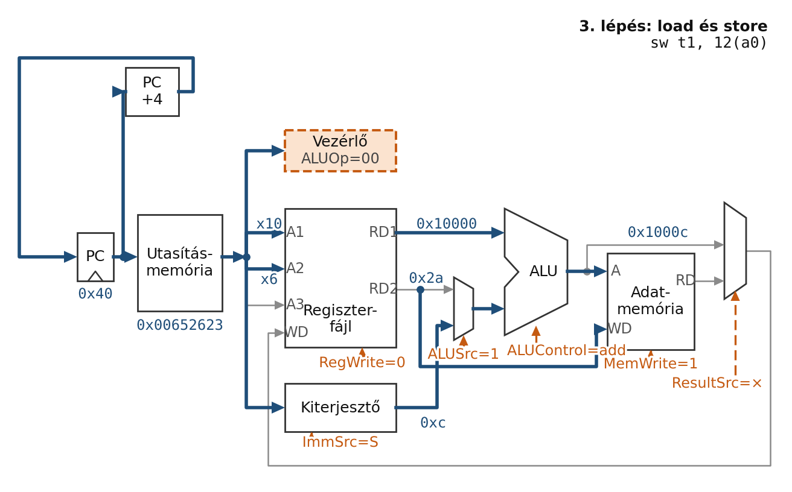

A sum kernel ciklusának első utasítása ez:
lw t1, 0(a0). Gépi kódként egyetlen 32 bites szám,
0x00052303. A 64 elemű tömb összegzése 333 ilyen számot hajt végre, és
az archkit.riscv értelmező minden egyesnél megteszi
ugyanazt: kiolvassa az utasításszót a programszámláló (PC) címéről,
kiveszi belőle a regiszterszámokat, kiszámítja a címet, olvas a
memóriából, ír egy regiszterbe, és lépteti a PC-t.
Az értelmező ezt Python-utasításokkal csinálja, egymás után. A
processzorban viszont nincs Python: csak regiszterek, memóriák,
összeadók és kapcsolók vannak, vezetékekkel összekötve. A kérdés az,
melyik elemekből és hogyan összekötve épül fel olyan
áramkör, amely egyetlen órajelciklus alatt végrehajtja a lw
utasítást, a következő ciklusban az add-ot, azután az
elágazást, mindig ugyanazon a vezetékhálózaton.
Ezt a hálózatot adatútnak (datapath) nevezzük. Ebben az alfejezetben lépésről lépésre rakjuk össze: elindulunk a legegyszerűbb utasításfajtától, és minden új fajtánál csak annyit adunk hozzá, amennyi hiányzik.
Képzeld el az adatutat egy műhelynek, amelyben még nincs futószalag. Vannak tárolók (a PC, a regiszterek, a memória), ahol az adatok nyugszanak, és vannak megmunkáló állomások (összeadó, ALU, bitátrendező), amelyek a bemenetükre érkező adatból azonnal kimenetet gyártanak. A kettő között váltók állnak: ezek a multiplexerek, amelyek egy vezérlőjel alapján döntik el, melyik bemenet jusson tovább.
Egy órajelciklus így zajlik. A felfutó élen a PC új értéket kap. Ettől kezdve a jel hullámként terjed végig a hálózaton: az utasításmemória kiadja az utasításszót, a regiszterfájl a két forrásregisztert, az ALU számol, a memória olvas, végül az eredmény odaér a regiszterfájl írási bemenetéhez. A következő felfutó élen a tárolók egyszerre átveszik az új értékeket, és minden kezdődik elölről.
Az alábbi ábra a kész adatutat mutatja a lw t0, 8(a0)
végrehajtása közben. Kövesd a vastag kék vonalakat: a PC-től az
utasításmemórián és a regiszterfájlon át az ALU-ba, onnan az
adatmemóriába, majd vissza a regiszterfájlhoz. A szürke vezetékek
léteznek, de ez az utasítás nem használja őket; a narancssárga feliratok
a vezérlőjelek.
lw t0, 8(a0)
végrehajtásakor: kék az aktív adatút, narancs a vezérlőjel, szürke a nem
használt vezetékDefiníció. Az állapotelem értéket őriz két órajelél között, és csak az élen (engedélyezés esetén) változik. A kombinációs elem kimenete a bemeneteinek pillanatnyi függvénye, egy rövid késleltetés után (Órajel, kritikus út és időzítési korlátok).
| Elem | Fajta | Bemenetek → kimenetek |
|---|---|---|
| programszámláló (PC) | állapot, 32 bit | következő PC → PC |
| regiszterfájl | állapot, 32 × 32 bit | A1, A2, A3 cím, WD adat, RegWrite → RD1, RD2 |
| utasításmemória | itt csak olvasott | cím → 32 bites utasításszó |
| adatmemória | állapot | cím, WD adat, MemWrite → RD |
| ALU, összeadók | kombinációs | két operandus (és ALUControl) → eredmény, jelzők |
| kiterjesztő | kombinációs | utasításbitek, ImmSrc → 32 bites közvetlen érték |
| multiplexer | kombinációs | több adat, választójel → egy adat |
A táblázat azt mondja: ami állapot, az csak az órajel élén íródik, minden más folyamatosan számol. A regiszterfájl olvasása is kombinációs: amint a címbemenet megváltozik, a kimenet követi; az írás viszont az élre vár (Tárolóelemek: latch, flip-flop, regiszter, SRAM).
Az utasítások és az adatok külön memóriában laknak. Ezt
Harvard-felépítésnek hívjuk. Erre azért van szükség,
mert egy lw ugyanabban a ciklusban olvas utasítást és
adatot is, és egy egyportos memória egyszerre csak egy címet tud
kiszolgálni. A valódi processzorokban ezt a két külön elsőszintű
gyorsítótár oldja meg (utasítás- és adat-cache), míg a mögöttük lévő
memória közös.
Az add t0, a1, a2 mindössze ennyit kér: olvasd ki a két
forrásregisztert, add össze, írd vissza, és lépj a következő utasításra.
A RISC-V formátumainak nagy ajándéka, hogy a regiszterszámok mindig
ugyanott vannak: rs1 a [19:15], rs2 a [24:20],
rd a [11:7] biteken (Kódolás
bitszinten és egy RISC-V-értelmező). Ezért ezek a vezetékek
dekódolás nélkül, fixen köthetők a regiszterfájl címbemeneteire.

Figyeld meg, hogy az ALU kimenete egyenesen a regiszterfájl írási
adatbemenetére (WD) megy, a PC-be pedig a külön összeadó eredménye. A
vezérlő feladata itt: RegWrite = 1, és az ALU művelete a
funct3/funct7 mezőkből (ALU, shifter, szorzás és osztás).
Az addi t0, a1, -4 második operandusa nem regiszter,
hanem az utasításszóba kódolt 12 bites szám. Két új elem kell:
A kiterjesztő nem számol, csak vezetékeket rendez át: a RISC-V formátumai úgy készültek, hogy a legfelső bit mindig az előjel (31. bit). Az ImmSrc vezérlőjel választja ki, melyik formátum szerint kell a biteket összerakni (I, S, B, J, később U).
A címszámítás bázis + eltolás:
,
vagyis a forrásregiszterhez az előjelkiterjesztett közvetlen értéket
adjuk. Ez egy összeadás két már meglévő operandussal, tehát az ALU
elvégzi. Új elem az adatmemória és utána a
ResultSrc multiplexer: a regiszterfájlba vagy az ALU
eredménye (aritmetika), vagy a memóriából olvasott adat
(lw) kerül.
A store-nál (sw t1, 12(a0)) az rs2
regiszter értéke az adatmemória írási bemenetére megy, MemWrite = 1, és
RegWrite = 0, mert nincs célregiszter. A közvetlen érték itt az S
formátum szerint két darabból áll, ezt a kiterjesztő ImmSrc = S
beállítással illeszti össze.

sw t1, 12(a0) végrehajtásakorAz ábrán az eredmény-multiplexer után szürke a visszaírási vezeték: a
sw nem ír regisztert. A × jelölés azt mutatja,
hogy ennél az utasításnál a ResultSrc értéke nem számít.
Eddig a következő PC mindig PC + 4 volt. A vezérlésátadásokhoz (Vezérlésátadás: elágazás, ugrás, ciklus, switch) három új dolog kell:
beq kivonja a két
regisztert, és ha az eredmény nulla, a feltétel teljesül;jalr esetén az ALU eredménye
(,
a legalsó bitje törölve).A jal és a jalr a visszatérési címet is
elmenti:
.
Ehhez a ResultSrc multiplexer harmadik bemenetet kap. Miért nem az ALU
számolja a célcímet? Azért, mert elágazásnál az ALU ugyanabban a
ciklusban az összehasonlítással foglalt, és egy elem egy ciklusban csak
egy műveletet végez.
| Elem | R | I-arit. | lw |
sw |
beq |
jal |
jalr |
|---|---|---|---|---|---|---|---|
| regiszterolvasás | 2 | 1 | 1 | 2 | 2 | – | 1 |
| kiterjesztő | – | ✓ | ✓ | ✓ | ✓ | ✓ | ✓ |
| ALU | ✓ | ✓ | cím | cím | összehasonlítás | – | cím |
| adatmemória | – | – | olvas | ír | – | – | – |
| célcím-összeadó | – | – | – | – | ✓ | ✓ | – |
| regiszterírás | ✓ | ✓ | ✓ | – | – | ✓ | ✓ |
A táblázat utasításosztályonként mutatja, mely elemek végeznek hasznos munkát; a többi is dolgozik (a hardver nem „kapcsolható ki”), de az eredménye elvész. Az adatmemória csak két osztálynak kell, ezt látni fogjuk a következő két alfejezet időzítési számításaiban.
Továbbvitt eredmény. Az egyciklusú adatút elemei:
PC, utasításmemória, regiszterfájl (két olvasó, egy író port),
kiterjesztő, ALUSrc multiplexer, ALU, adatmemória, ResultSrc
multiplexer, PC + 4 összeadó, célcím-összeadó, PC-multiplexer. A
jelnevek: PC, Instr, RD1,
RD2, ImmExt, SrcA,
SrcB, ALUResult, Z,
ReadData, Result, PCPlus4,
PCTarget, PCNext. Változatlanul visszatérnek
ezekben az alfejezetekben: Vezérlőegység és
vezérlőjelek, Az egyciklusú gép teljesítménye
és korlátai, Többciklusú adatút
állapotgéppel és A futószalag elve: átbocsátás
és késleltetés.
Kiinduló állapot: PC = 0x40, a0 = 0x10000,
a1 = a2 = 5, t1 = 0x2A, és a
memóriában M[0x10008] = 0x1234.
lw t0, 8(a0), gépi kódja
0x00852283.
Instr = 0x00852283, PCPlus4 =
0x44.a0), [11:7] = 5 (t0);
RD1 = 0x10000. A kiterjesztő I formátumban a [31:20] = 8
értéket adja.SrcB = 8; ALUResult
= 0x10000 + 8 = 0x10008.ReadData = M[0x10008] = 0x1234.Result = 0x1234 kerül a
t0 regiszterbe; PCSrc = PC4, PCNext =
0x44.sw t1, 12(a0) (a PC innen indul újra
0x40-ről): RD2 = 0x2A, ImmSrc = S, ImmExt =
12, ALUResult = 0x1000C. MemWrite = 1: M[0x1000C] ← 0x2A.
RegWrite = 0, PCNext = 0x44.
beq a1, a2, 16: RD1 =
RD2 = 5, ALUSrc = 0, az ALU kivon: 0, tehát Z = 1.
PCTarget = 0x40 + 16 = 0x50, és a Branch · Z = 1 miatt
PCNext = 0x50.
Mindhárom utasításban ugyanazok a vezetékek léteznek; csak a multiplexerek állása és az írásengedélyek különböznek.
Az archkit.datapath.SingleCycle az adatutat pontosan
ilyen elemekből rakja össze: egy ciklus kis függvényhívások láncolata. A
lényege (részlet):
# részlet: az archkit.datapath.SingleCycle.step lényege
rd1, rd2 = regs.read(rs1, rs2) # regiszterfájl olvasása
immext = imm_gen(word, ctl["ImmSrc"]) # kiterjesztő
srcb = immext if ctl["ALUSrc"] else rd2 # ALUSrc multiplexer
result_alu, flags = alu(rd1, srcb, aluctl) # ALU
read = read_mem(mem, result_alu, funct3) # adatmemória
result = {"ALU": result_alu, "Mem": read, "PC4": pc + 4}[ctl["ResultSrc"]]Futtassuk a kézi példát a modellen. A BASE kiépítés
pontosan az ebben az alfejezetben összerakott adatút; a vezérlőjeleket a
következő alfejezet tervezi meg.
import sys; sys.path.insert(0, "code")
from archkit import datapath as dp, riscv
def one_step(text):
cpu = dp.SingleCycle(riscv.assemble(text, text_base=0x40), dp.BASE)
for name, value in [("a0", 0x10000), ("a1", 5), ("a2", 5), ("t1", 0x2A)]:
cpu.regs.regs[riscv.reg_number(name)] = value
cpu.mem[0x10008:0x1000C] = (0x1234).to_bytes(4, "little")
return cpu.step().sig
steps = {t: one_step(t) for t in ["lw t0, 8(a0)", "sw t1, 12(a0)", "beq a1, a2, 16"]}
print(f"{'jel':10}" + "".join(f"{t:>16}" for t in steps))
for name in ["Instr", "RD1", "RD2", "ImmExt", "SrcB", "ALUResult", "Result", "PCNext"]:
print(f"{name:10}" + "".join(f"{s[name]:>#16x}" for s in steps.values()))
for name in ["Z", "RegWrite", "MemWrite", "PCSrc"]:
print(f"{name:10}" + "".join(f"{s[name]!s:>16}" for s in steps.values()))jel lw t0, 8(a0) sw t1, 12(a0) beq a1, a2, 16
Instr 0x852283 0x652623 0xc58863
RD1 0x10000 0x10000 0x5
RD2 0x0 0x2a 0x5
ImmExt 0x8 0xc 0x10
SrcB 0x8 0xc 0x5
ALUResult 0x10008 0x1000c 0x0
Result 0x1234 0x1000c 0x0
PCNext 0x44 0x44 0x50
Z 0 0 1
RegWrite 1 0 0
MemWrite 0 1 0
PCSrc PC4 PC4 PCTAz Instr sor a kézi példa gépi kódjait mutatja. A
sw és a beq oszlopában is áll
Result érték, de ott RegWrite = 0, így sehova nem íródik
be. A lw oszlopában az RD2 a [24:20] bitek
alapján kiolvasott regiszter (itt x8 = s0,
értéke 0), amelyre nincs szükség.
Végül ellenőrizzük, hogy a modell ugyanazt a nyomot adja, mint az értelmező:
src = riscv.sum_src(list(range(1, 65)))
cpu = dp.SingleCycle(src)
cpu.run()
ref = riscv.run(src)
print("ciklus:", len(cpu.steps), " utasítás:", len(ref.trace))
print("azonos nyom:", cpu.trace == ref.trace, " kimenet:", cpu.output)ciklus: 333 utasítás: 333
azonos nyom: True kimenet: 2080Egy utasítás pontosan egy ciklus: a 333 utasítás 333 órajelciklus alatt fut le, és minden regiszter- és memóriaírás megegyezik a referenciáéval.
Az interaktív lapon (a HTML-kiadásban) az „Utasítás” listából választhatsz, az „rs1 értéke” és az „rs2 értéke” mezőbe saját operandust írhatsz, a „Kiépítés” listával a négy lépés valamelyikét kapcsolhatod be, a lejátszó pedig az egy cikluson belüli öt jelterjedési szakaszon vezet végig.
add t0, a1, a2 utasítást, és lépj a 4.
szakaszig: a kiterjesztő és az adatmemória szürke marad. Ezután a
„Kiépítés” listában válaszd az 1. fokozatot: az add
ugyanígy lefut, a lw viszont hiányzó elemet jelez.lw t0, 8(a0) mellett írd az „rs1 értéke” mezőbe, hogy
0x10004. A cím 0x1000C lesz, a ReadData pedig
0.beq a1, a2, 16 alapértékeivel (7 és 5) a PCSrc PC4
marad. Írj mindkét mezőbe 5-öt: Z = 1, a PC-multiplexer a célcímet
(0x50) választja.jalr ra, 8(t2) esetén keresd meg, melyik vezetéken
jut a célcím a PC-multiplexerhez, és melyiken a visszatérési cím a
regiszterfájlhoz.lw öt ciklusig tart az egyciklusú
gépben”. Ok: a lejátszó szakaszai egyetlen cikluson belüli
jelterjedést mutatnak. Javítás: ebben a gépben az állapot csak
a ciklus végén, egyszer változik; a többciklusú változat külön
alfejezet.sw után egy látszólag véletlen regiszter megváltozik.
Ok: S formátumban a [11:7] bitek az imm[4:0]
bitek, de a regiszterfájl ezeket célregiszterként látja.
Javítás: store-nál (és elágazásnál) RegWrite = 0.ImmExt, további eltolás
nélkül.jalr a célcím-összeadóval.
Tünet: a visszatérés rossz helyre ugrik. Ok: a
jalr bázisa az rs1 regiszter, nem a PC.
Javítás: a PC-multiplexer harmadik bemenete az ALU eredménye, a
0. bitet törölve.lw
végrehajtásakor?sub t0, a1, a2
jelértékeit (a1 = 7, a2 = 5, PC = 0x40):
RD1, RD2, SrcB,
ALUResult, Result, PCNext. Melyik
elemek dolgoznak hiába?sw t1, -4(a0)
utasítást (a0 = 0x10008, t1 = 0x2A): mekkora
az ImmExt, hova ír, és mit nem ír?jalr ra, 8(t2) utasításnál
(t2 = 0x80, PC = 0x40) melyik multiplexer melyik bemenetét
választja, és mi kerül az ra regiszterbe?lui t0, 0x12345 is végrehajtható legyen? Adj meg olyan
megoldást, amely nem használja az ALU-t.sum kernel futása alatt megszámolja, hány ciklusban ír
regisztert az adatút, és hány ciklusban használja az adatmemóriát.beq a1, a2, 16 utasításra (0x00C58863). Mekkora lesz a
célcím? Magyarázd meg, honnan származik a szám.Az egyciklusú adatút állapotelemekből (PC, regiszterfájl, utasítás-
és adatmemória) és kombinációs elemekből (ALU, kiterjesztő, összeadók,
multiplexerek) áll. Az állapot csak az órajel élén változik, közben a
jel hullámként halad végig a hálózaton. A kiépítés lépései: az R-típus
két regisztert olvas és az ALU eredményét írja vissza; a közvetlen
értékes műveletekhez kiterjesztő és ALUSrc multiplexer kell; a load és
store ALU-val címez, adatmemóriát és ResultSrc multiplexert igényel; az
elágazás és az ugrás célcím-összeadót és PC-multiplexert. Minden
utasítás pontosan egy ciklus, és ugyanazokat a vezetékeket használja,
csak a multiplexerek állása és az írásengedélyek különböznek. Az elemek
és jelnevek (SrcB, ALUResult,
Result, PCNext és társaik) a következő
alfejezetekben változatlanul visszatérnek.
jal/jalr esetén a PC + 4.RD1 = 7, RD2 = 5, ALUSrc = 0, így
SrcB = 5, ALUControl = sub, ALUResult = 2,
Result = 2 → t0, PCNext = 0x44. A
kiterjesztő, a célcím-összeadó és az adatmemória is előállít valamit, de
sehova nem jut el (a MemWrite = 0 miatt a memória nem is változik).
Az S formátumban a [31:25] = 1111111 és a [11:7] = 11100 bitek együtt
0xFFC, azaz ImmExt = −4. ALUResult = 0x10008 −
4 = 0x10004. MemWrite = 1: M[0x10004] ← 0x2A. RegWrite = 0, a
regiszterfájl nem változik, PCNext = PC + 4.
ALUSrc = 1 (a kiterjesztett 8), ImmSrc = I. Az ALU: 0x80 + 8 = 0x88.
A PC-multiplexer az ALU bemenetét választja (a 0. bit törlése 0x88-on
nem változtat), tehát PCNext = 0x88. A ResultSrc a PC4
bemenetet: ra ← 0x44.
A kiterjesztőnek ismernie kell az U formátumot (ImmSrc = U): a
[31:12] bitek, alul 12 nullával. A ResultSrc multiplexer kap egy
negyedik bemenetet, amely közvetlenül az ImmExt. RegWrite =
1, MemWrite = 0. Az eredmény t0 = 0x12345000; az ALU
művelete közömbös. (Másik jó megoldás: egy multiplexer az ALU első
bemenete elé, amely 0-t választ, és az ALU összead.)
cpu = dp.SingleCycle(riscv.sum_src(list(range(1, 65))))
cpu.run()
writes = sum(s.reg_write is not None for s in cpu.steps)
mem = sum(s.sig.get("ResultSrc") == "Mem" or s.mem_write is not None for s in cpu.steps)
n = len(cpu.steps)
print(f"regiszterírás: {writes}/{n}, adatmemória: {mem}/{n} = {mem / n:.1%}")regiszterírás: 266/333, adatmemória: 64/333 = 19.2%Az adatmemória csak minden ötödik ciklusban dolgozik hasznosan, mégis minden ciklusnak elég hosszúnak kell lennie hozzá. Ezzel a pazarlással Az egyciklusú gép teljesítménye és korlátai foglalkozik.
Az I formátum a [31:20] biteket olvasná: a 0x00C58863 felső 12 bitje
0x00C = 12. Ezek a bitek valójában a funct7 (nullák) és az
rs2 mező (12 = a2), így a célcím 0x40 + 12 =
0x4C lenne 0x50 helyett. A hiba azért alattomos, mert más regiszterekkel
más rossz címet ad.